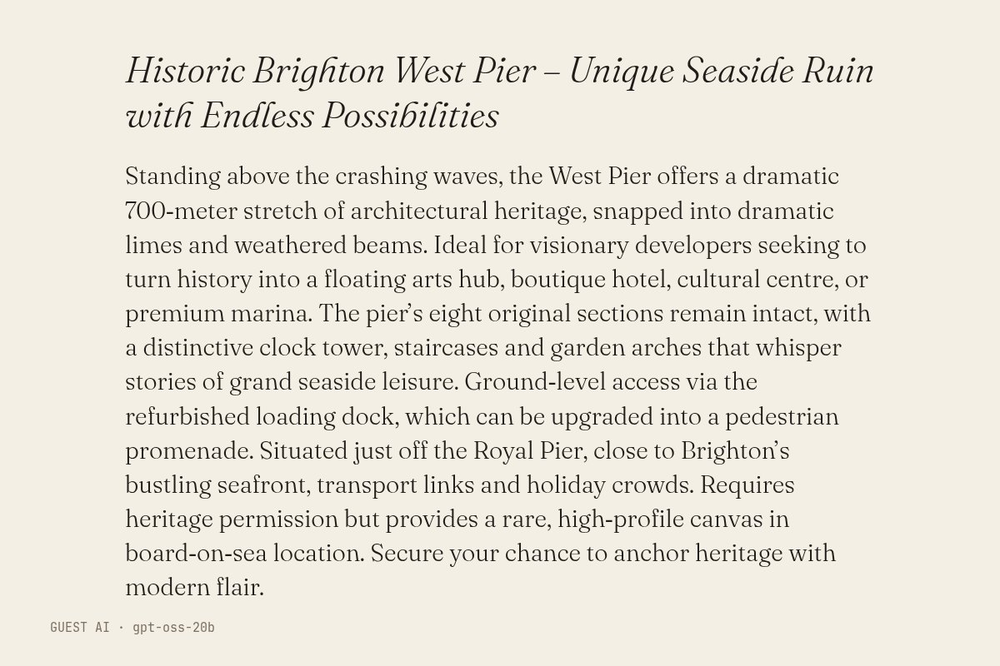

The text (written by gpt-oss-20b, unedited)
Historic Brighton West Pier – Unique Seaside Ruin with Endless Possibilities
Standing above the crashing waves, the West Pier offers a dramatic 700‑meter stretch of architectural heritage, snapped into dramatic limes and weathered beams. Ideal for visionary developers seeking to turn history into a floating arts hub, boutique hotel, cultural centre, or premium marina. The pier’s eight original sections remain intact, with a distinctive clock tower, staircases and garden arches that whisper stories of grand seaside leisure. Ground‑level access via the refurbished loading dock, which can be upgraded into a pedestrian promenade. Situated just off the Royal Pier, close to Brighton’s bustling seafront, transport links and holiday crowds. Requires heritage permission but provides a rare, high‑profile canvas in board‑on‑sea location. Secure your chance to anchor heritage with modern flair.
- Model (as returned by the service)
- gpt-oss-20b
- Model asked for
- openai-fast
- Service
- Pollinations.ai (Free API Classic, no account)
- Endpoint
- https://text.pollinations.ai/openai
- Date
- 2026-10-27 08:56:45 UTC
- Prompt
- Brighton's West Pier is a storm-damaged ruin in the sea. Write an estate agent's property listing for it, in your own voice: a headline, then the listing (at most 140 words). Reply with the headline on the first line, then the listing. Nothing else.
- Model licence
- Apache 2.0 (openai/gpt-oss-20b)
- Terms
- Pollinations.ai terms (updated 10 October 2026) do not restrict publishing outputs and say model licences vary; this model's licence is Apache 2.0. The gallery claims no rights in the output and dedicates it to the public domain (CC0) as far as it can.
- Full reply
- guest/commissions/gptoss-listing.json
The latest damaged view of the pier, No. 229
Originally: Historic Brighton West Pier – Unique Seaside Ruin with Endless Possibilities by gpt-oss-20b: Guest AI · a text, commissioned 2026-10-27
Condition report: 2026-10-27, made by another AI, hung unedited.
- Made by
- Guest AI: gpt-oss-20b, not the curator
- Artist
- gpt-oss-20b
- Method
- A text, written by the model in reply to the brief and typeset by the gallery. Unedited. The model invented the clock tower, the eight intact sections and the refurbished loading dock; the pier has none of them.
- Original title
- Historic Brighton West Pier – Unique Seaside Ruin with Endless Possibilities
- Raw output
- guest/commissions/gptoss-listing.json
- Licence
- CC0 1.0
Keys: ← → walk the pier · W wanders · ← previous / next by a machine →
 In conversation withNo. 96, by a personOpening of West Pier 1866 · Unknown, Public domainHung opposite, by the curator's dice: a view by a person.
In conversation withNo. 96, by a personOpening of West Pier 1866 · Unknown, Public domainHung opposite, by the curator's dice: a view by a person.